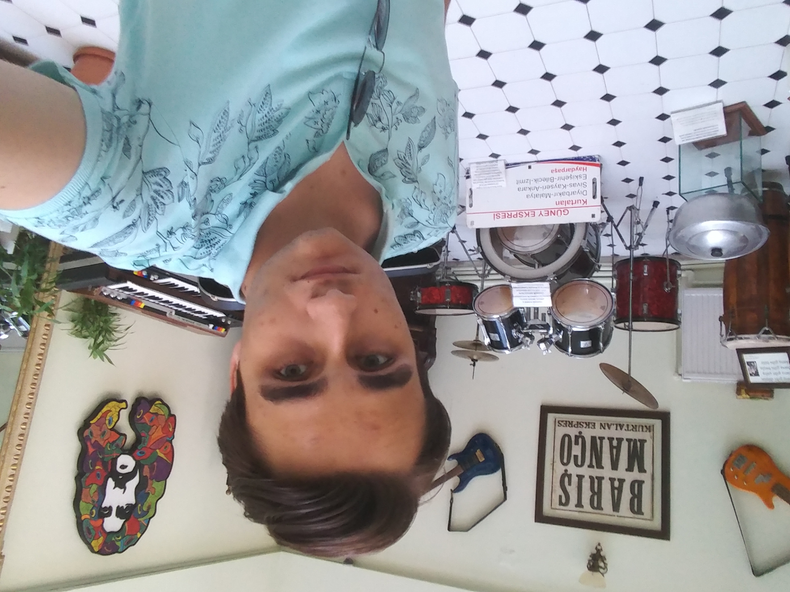
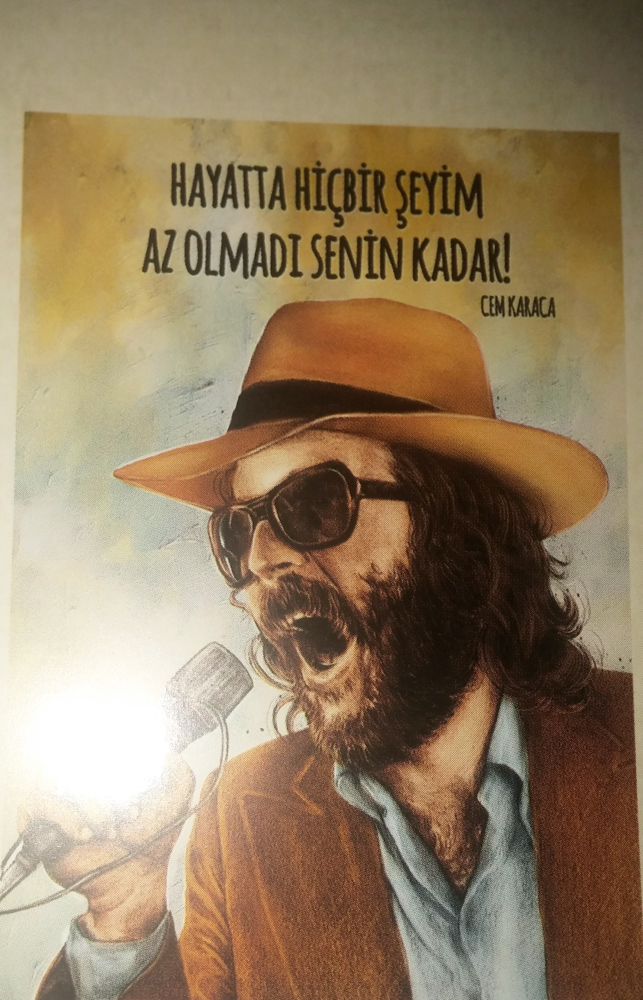

Sakarya'ya ilk gelişimden
Ben Gürkan. 19 yaşındayım. Kırşehirliyim. Ankara'da yaşıyorum ancak okulum dolayısıyla Sakarya'dayım. Sakarya Üniversitesi'nde Bilgisayar Mühendisliği 1. sınıf öğrencisiyim.

En sevdiğim sanatçılar Barış Manço ve Cem Karaca.

Biraz klişe bir hobi olacak ama kitap okumayı çok severim. :) Özellikle polisiye romanlar okumayı! Polisiye romanlar arasında favorim ise BEYOĞLU RAPSODİSİ.